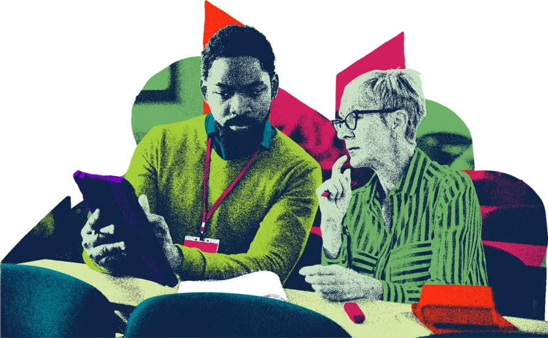
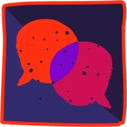
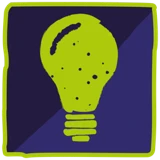
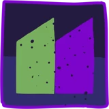
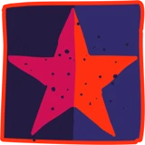

2027 Free Learning
12 free modules for everyone who works with or cares for children and young people. A new module every month, starting on 4 January 2027.
Already signed up? Check your emails for details on how to access this training.

The Care Leaders is 10 this year.
To say thank you, we’re giving a year of learning away, free, to everyone who works with children and families in and around care.
Video from Luke, about 90 seconds
Placeholder until the video is recorded
What you get every month

A 30 minute live sessionOn Microsoft Teams, second Monday of the month, 12:30 to 13:00. 20 minutes of learning, then 10 minutes of questions you can stay for if you have time.
A short online courseHosted on our e-learning platform, The Care Leaders Online
A workbookFor each module
A certificateWhen you finish each module
It’s free to join, and it adds to your CPD.
The 12 modules
- JanuaryCare Leaver to Care LeaderLive session Monday 11 January 2027
- FebruaryLanguage that LiftsLive session Monday 8 February 2027
- MarchSchools and Social CareLive session Monday 8 March 2027
- AprilTrauma, Attachment and RegulationLive session Monday 12 April 2027
- MayFostering and RelationshipsLive session Monday 10 May 2027
- JuneCare to WorkLive session Monday 14 June 2027
- JulyYouth ParticipationLive session Monday 12 July 2027
- AugustCo-design With EveryoneLive session Monday 9 August 2027
- SeptemberLeading TransformationLive session Monday 13 September 2027
- OctoberNon-Violent ResistanceLive session Monday 11 October 2027
- NovemberLeaving CareLive session Monday 8 November 2027
- DecemberLived Experience LeadershipLive session Monday 13 December 2027
Who it’s for
Everyone who works with or cares for children and young people, including:
- Foster and kinship carers
- Residential care
- Social workers and personal advisers
- Schools and Virtual Schools
- Family support and early help
- Leaders and managers
- Councillors and board members
- Youth justice and probation
- Employers
- Care experienced people
Sign up for 2027 Free Learning
Sign up once. We’ll email you how to access each module and the link to every live session.
Already signed up? Check your emails for details on how to access this training.
Questions? Email hello@thecareleaders.com